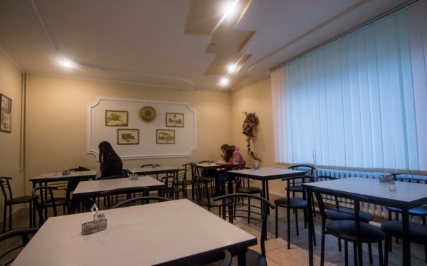
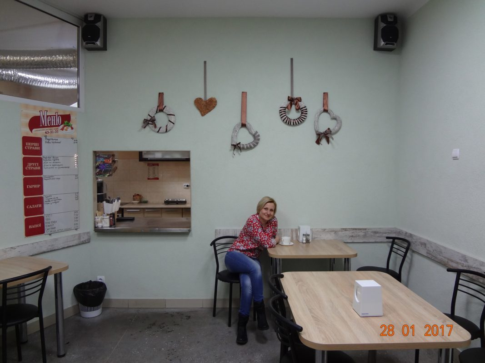
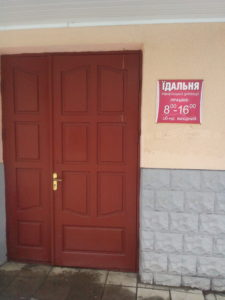
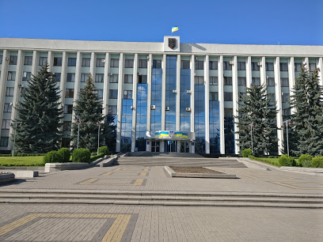
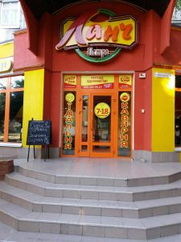

Для офісних працівників їдальні це найвигідніше місце для обіду. Страви ситні, калорійні, а головне борщик-супчик є, а не сухом’ятка з фаст-фуду. Ціни не ресторанні, тож такі заклади облюбували містяни давно. РІВНЯНИ підідібрали перелік закладів харчування, де можна ситно поїсти за невелику ціну.
Їдальня Поштамту

Їдальня Поштамту знаходиться у центрі Рівного, навпроти ЦУМу. Ми часто бачимо яскраву вивіску , яка запрошує зайти на обід, проте не наважуємось зайти посмакувати. Тут можна бюджетно поїсти комплексним обідом, зазвичай черг немає, хіба що в обідню пору гурт набіжить невеликий.
Їдальня ПМК

дальня ПМК належить до мережі, відтепер доставка їжі здійснюється від закладу Бісто Ланч. Їдальня запрошує скуштувати домашні страви за помірними цінами. Комплексні обіди змінюються щодня. Великий вибір страв української кухні, кава, чай, компот. Діє доставка.
Їдальня Рівненської дирекції

Комплексні обіди змінюються щодня. Великий вибір страв української кухні, кава, чай, компот.
Їдальня №20

Колись "Їдальня №20", розташована в будівлі обласної ради, що на Майдані Просвіти у Рівному, була закритим закладом харчування, пообідати тут могли лише обкомівські працівники. Зараз меню їдальні облради знають чи не всі, хто працює в сусідніх організаціях.
З 13:00 до 14:00 біля вікна замовлень вишиковується черга десь із двох десятків людей. Чиновники й депутати — у черзі з усіма. Чи не єдина їхня перевага — це гарантоване місце за столиками, які резервують табличками "Замовлено". Іноді, приблизно один раз на тиждень, тут обідає й голова облдержадміністрації Василь Берташ. А ось депутати облради заходять лише у сесійні дні. Як розповіли в їдальні, відвідувачі зазвичай неперебірливі, принаймні страви ще жодного разу на кухню не повертали. Обід з першої, другої страви й напою тут обходиться у 20-25 гривень. Як пояснила завідувачка їдальні Тетяна Нагорна-Босик, у них менша, ніж в інших закладах, націнка. — Наша їдальня практично не відрізняється від інших подібних, але заклад усе ж комунальний, розрахований і для працівників облради, і для людей, які приїжджають сюди на прийом, — розповіла п.Тетяна. — Ми зацікавлені, щоб у нас постійно були відвідувачі. На якість страв ціни не впливають.
Ланч-бістро

Ланч-бістро працює в режимі їдальні та здійснює доставку. Тут пропонують різноманітні холодні та гарячі напої, великий вибір страв української кухні. Також можна замовити бізнес-ланч. Затишний інтер’єр, безкоштовний WiFi. Є літній майданчик. Заклад – безалкогольний, запрошує гостей відзначати дитячі і сімейні свята.
Їдальня «Рівне Енерго»
Їдальня «Рівне Енерго» знаходиться на території підприємства «Рівне Енерго». В меню присутні страви української та європейської кухні. Також можна випити каву чи чаю з кондитерськими виробами і випічкою, або ж взяти каву з собою, комплексні обіди.